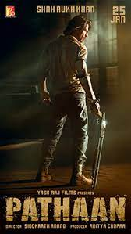
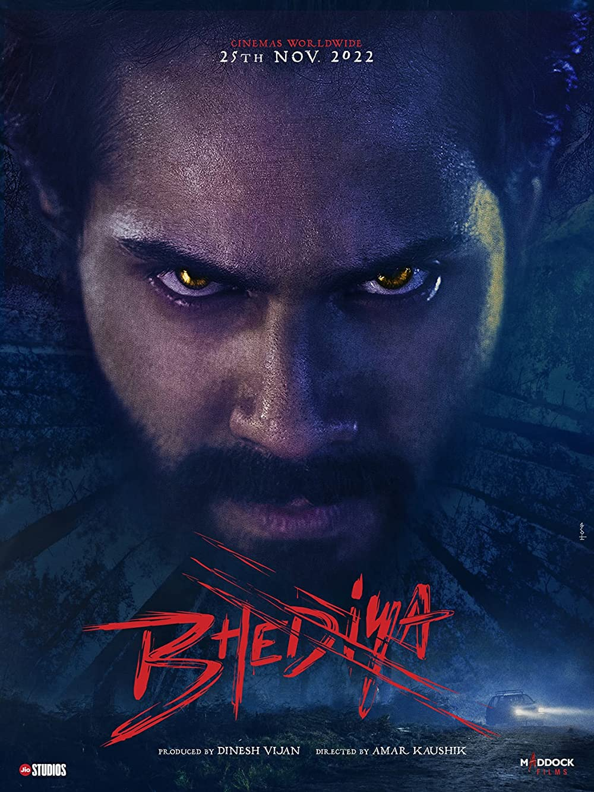
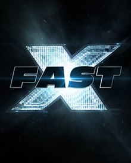

These are the Upcoming Movies

 
Black Panther: Wakanda Forever Avatar: The Way of Water Adipurush Pathaan Bhediya
Genres:Superhero,Action,Adventure Genres:Sci-Fi,Action,Adventure Genres :Action,Adventure Genres :Action,Drama,Crime-film Genres :Horror,Comedy
Black Panther is a 2018 American Jake Sully and Ney'tiri have form Adipurush ( transl. The Somewhere in the dystopian Middle Set in the forests of Arunachal, superhero film based on the Marvel a family and are doing everything first man) is an upcoming East, grand houses that once housed Bhediya is a story of Bhaskar, a Comics character of the same name. to stay together. However, they Indian epic mythological the wealthy are now homes of the man who gets bitten by a wolf,and Produced by Marvel Studios. must leave their home Pandora. film based on Ramayana. city's most-dangerous criminals. begins to transform into creature.



Aquaman and the Lost Kingdom John Wick: Chapter 4 Blue Beetle Fast X A Good Person
Genres:Superhero,Action,Sci-Fi Genres:Action,Thriller Genres :Superhero Genres :Action,Adventure,Thriller Genre :Horror,Comedy
Aquaman forges an uneasy With the price on his head ever Fox Comics police officer The next installment in the Allison is a young woman with alliance with an unlikely ally increasing,legendary hit man John who fought crime with franchise.Fast X is also known a wonderful fiance, a blossoming in a bid to save Atlantis and the Wick takes his fight against superpowers gained by as Fast & Furious 10. career, and supportive family rest of the planet. the High Table. ingesting Vitamin 2X. and friends.
These are the Popular Movies
These are the Top-Rated